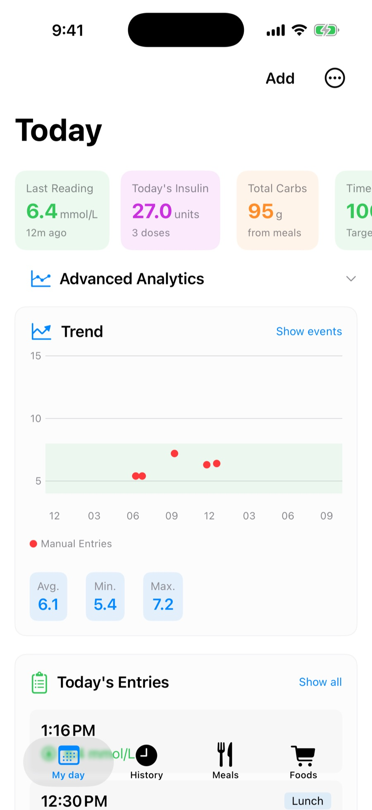
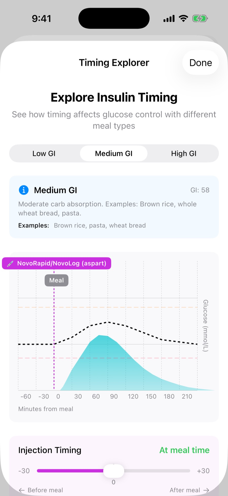
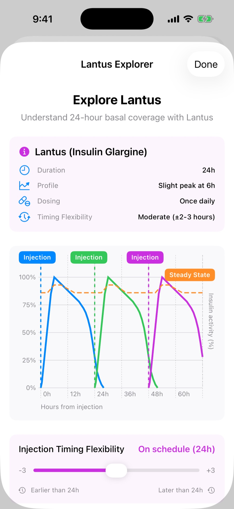
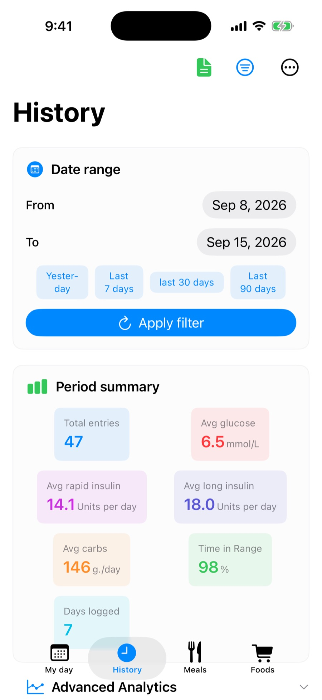
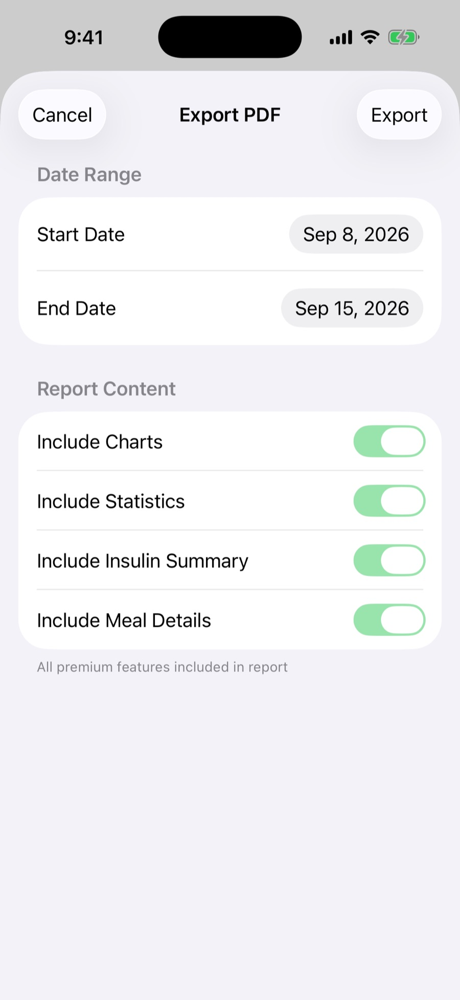

Record glucose, carbohydrates and insulin in seconds. DiabetesFit applies the carb ratio and correction factor your own doctor gave you — so you stop doing division at the table.

Nothing here is invented. The app uses the parameters from your care team, applies them consistently, and shows its working.
Glucose arrives from Dexcom, Libre or any connected app — through Apple Health. Nothing to retype.
Zopf, Rösti, Birchermüesli — 160 of them, with carbohydrates and glycemic index. Search Open Food Facts and USDA for the rest, or add your own.
Carbohydrate ratio and correction factor come from your doctor and live in settings. The app divides; it never decides.
Most apps record what happened. DiabetesFit also shows the shape of it — how your insulin and your meal overlap, minute by minute, for your brand of insulin.




Pick a period and DiabetesFit summarises it: entries, average glucose, average basal insulin, time in range. Then export it as a PDF report — charts, statistics, insulin summary and meal details, each one optional.
No account to create, no servers to trust, and no analytics, crash-reporting or tracking code of any kind. Your logbook lives on your phone and backs up to your own iCloud account — never to us, because there is no us to send it to.
Premium unlocks the analytics, the glycemic-index meal analysis, both insulin explorers and the exports. There is no subscription, nothing renews, and it restores free on any device you sign into.